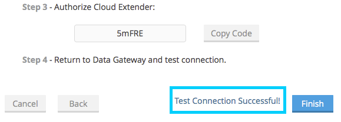
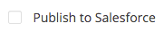
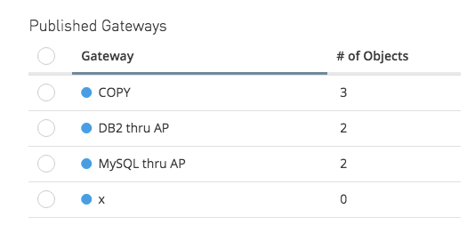

Creating and Configuring a Gateway
Overview
To create and manage gateways follow the steps below. When using the Data Gateway through Salesforce access Anypoint Gateway Designer from your Salesforce account by clicking the MuleSoft tab. When using it through the Anypoint Platform, access it on the Data Gateway tab.
In Gateway Designer, you can perform actions such as:
-
View, add or modify gateways
-
Configure connections and VPC
-
Publish your connection to Salesforce
-
View gateway logs
Roles and permissions in Gateway Designer match those defined in Anypoint Platform. For details, see User Roles and Permissions in Managing Gateways.
Creating a New Gateway
To create a new gateway, click Create Gateway. The Anypoint platform takes you through the creation process via simple configuration screens, explained below.
| If you’re using the Data Gateway through the Anypoint Platform, you must first click the Login with Salesforce button, select a Salesforce account to link to and provide the required credentials and allow the Anypoint Platform access to your Salesforce data. |
Configuring Properties
The gateway creation wizard displays the New Gateway screen, shown below. Here you define the following parameters:
-
The connection to use. You can use the drop-down menu to select from existing connections, or click Create to create a new connection
-
A name for the gateway
-
A description for the gateway (optional)
-
Username and password for the gateway
-
Throttling (optional)
Fill in the required parameters, and select whether to use an existing connection or create a new connection.
If you check Apply Throttling, the wizard prompts you for the throttling parameters:
Throttling
This optional setting limits the max. number of messages that an API can process per millisecond. Throttling is applied to all API calls, regardless of the source. Messages that exceed the established limit are queued for later processing. The available parameters are:
-
Delay Time in Milliseconds: The amount of time that responses are delayed after the SLA has been exceeded
-
DelayAttempts: Number of attempts to process the request before fully exhausted
-
Maximum Requests Per Period: Number of requests to allow per specified time period
When configuring throttling, you can click an input field to view its brief description:
After filling in the required parameters, click Create Gateway. Gateway creation takes a few minutes, but you can immediately continue working if you click Return to Gateway list.
After gateway creation completes, you can Publishing Your Gateway your gateway.
The next section explains how to create a new connection for your gateway, during the process of creating a gateway.
Configuring a New Connection
As detailed above, when you create a new gateway you have the option to use an existing connection, or create a new connection. If you select to create a new connection, the wizard prompts you to select from the available connection types, as shown below.
Click the desired connection type, then click Next. The wizard displays a connection parameters configuration window. The image below displays the configuration parameters for Oracle.
Optionally, you can specify your connection information using a connection String by clicking in the Advanced tab:
| You can configure your Gateway using a connection String for any available external data sources, except for SAP. |
After filling in the required parameters, click Next. The wizard displays a dialogue that allows you to test your connection, and also to specify whether your connection is behind a firewall.
Click Test Connection to ensure connectivity before actually creating the connection.
If your data source is on a private network, click <Datasource name> datasource is behind a firewall. The wizard will prompt you if want to use an existing Cloud Extender configuration or if you want to create a new one. If you choose to configure a new connection, you will be prompted to download Cloud Extender, an agent which allows communication between Data Gateway and the data source, as explained below.
You also have the choice of using a VPC, a robust, secure IPsec or OpenSSL connection between your company’s network and the Anypoint Platform. Keep in mind that this might require involvement from your IT organization to fully set it up.
Configuring a New Connection for a Private Network
The configuration procedure allows you to specify whether your data source is on a private network (see screenshot above). If this is the case, the wizard takes you through the process of downloading Cloud Extender:
-
The Cloud Extender agent provides a secure data link between your Data Gateways and enterprise data sources without the need to modify your firewall.
Any private services or data sources behind an enterprise firewall can be made available to your Data Gateway application by using Cloud Extender
You must install Cloud Extender on a machine that resides within the private network, and which has access to the data source (valid user credentials).
You can download and install Cloud Extender during the process for configuring a new gateway, as described below.
Downloading Cloud Extender
When creating a new connection, you are prompted to select the connection type (for example SAP, Oracle, etc. as described above). When you select the connection type, the wizard displays the initial configuration window for your connection (see above). After filling in the parameters required in this window, the wizard allows you to select whether your data source is on a private network.
In the example below, you are configuring a connection to an Oracle data source. To specify that the MySQL server resides on a private network, click MySQL datasource is behind a firewall. The wizard prompts you to complete several steps, as shown in the image below.
-
Select a name for your new configuration
-
Use the drop-down menu to download the version of Cloud Extender appropriate for your operating system. Cloud Extender is available for Windows, OS X and Linux.
-
Install Cloud Extender on your target machine. (For details, see Installing Cloud Extender on Your Local Machine.)
-
The Cloud Extender installer prompts you for an authorization code. Enter the code provided by the wizard (in the image above,
5mFRE). -
Cloud Extender automatically tests the connection to the gateway, and displays a message with the result.
 -
In your Web browser, complete the wizard for the new configuration.
At this point, Cloud Extender should be running on your local machine, enabling connections to the data source.
Installing Cloud Extender on Your Local Machine
As described in the previous section, you download Cloud Extender during the process of configuring a new connection for a private network. This section contains installation details.
Cloud Extender Description
Cloud Extender is an agent that opens a connection to Data Gateway, which Data Gateway can use for subsequent communications. Cloud Extender relays data between Data Gateway and the data source within the private network. Cloud Extender needs access to the data source, that is, network connectivity and valid user credentials. The advantage of Cloud Extender is that it eliminates the need to open ports in your firewall.
Cloud Extender tunnels socket connections via SSH over HTTP, it can even handle connections that run over a proxy. It configures itself automatically — all you have to do is run it.
Supported Operating Systems
Cloud Extender is available for:
-
Windows (7 and above)
-
OS X (10.x and above)
-
GNU/Linux
Installation Requisites
For Windows:
-
Microsoft Windows 7 or later
-
JAVA_HOME environment variable set to JRE/JDK home
For OS X:
-
Mac OS X 10.x or later
-
JAVA_HOME environment variable set to JRE/JDK home
For Linux
-
JAVA_HOME environment variable set to JRE/JDK home
In all cases, to install and run the agent you need Java 7.x or later installed.
Installing Cloud Extender (Windows and Mac)
Install Cloud Extender according to the normal procedure installing software on your operating system. Once installed, run the application.
Installing Cloud Extender (Ubuntu)
To Install Cloud Extender in Red Hat use the following command 'sudo dpkg -i mule-cloud-extender_1.0.0_all.deb' and finally 'mule-cloud-extender' to run it.
Installing Cloud Extender (RedHat)
To Install Cloud Extender in RedHat use the following command: 'sudo rpm -ivh mule-cloud-extender-1.0.0-1.noarch.rpm' and finally 'mule-cloud-extender' to run it.
Running Cloud Extender
The first time it runs, Cloud Extender requests the authorization code provided by the wizard during the gateway configuration process (see above).
Enter the authorization code you were given, then click OK.
If the agent can’t reach the server, a new window is displayed asking if the agent is behind a proxy, and then asking for the proxy details.
Once the proxy is configured, the connection is retested and if it works this time around, the wizard will close on its own. This wizard only runs the first time the Cloud Extender is executed.
Removing Cloud Extender (Mac and Windows)
You remove Cloud Extender like any other piece of software on your machine. You can also remove the Cloud Extender connection from Data Gateway itself, without the need to remove Cloud Extender from the machine where it is installed. If you do this, Data Gateway ceases to accept connections from the Cloud Extender instance installed on the machine listed in the connection. Communication with the data source on that network become lost.
For details on removing a Cloud Extender connection, see the Cloud Extender section in Managing Gateways.
Configuring a New Connection for SAP
There are a few requirements for connecting Data Gateway to SAP; these are described below.
SAP Libraries
When configuring a new SAP connection, you need to have the SAP library files available on your local machine. The connection configuration window prompts you to upload the libraries necessary for a SAP connection:
-
SAP IDoc JCo Library (sapidoc-x.jar)
-
SAP JCo Library (sapjco-x.jar)
-
SAP JCo Native Library (libsapjco-x.jar)
Download these SAP libraries from the official SAP download site. You need a SAP user ID to download.
For more information on SAP libraries, refer to SAP Java Connector in the SAP help site.
Required Function Module Z_AW_RFC_READ_TABLE
In order to deploy a gateway to an environment, function module Z_AW_RFC_READ_TABLE used by Data Gateway must exist in the SAP instance. If the module is present in the SAP instance, then no action is necessary.
Depending on the specific version of SAP, the function module may be called /BODS/RFC_READ_TABLE or /SAPDS/RFC_READ_TABLE. If the SAP instance contains one of these two modules, copy it into a new module named Z_AW_RFC_READ_TABLE.
If the SAP instance does not contain any of the above-listed function modules, then you must create function module Z_AW_RFC_READ_TABLE. Depending on the SAP solution and/or release, it may possible to install the module in accordance with SAP Note 1752954. If this SAP note is not applicable for your specific SAP solution and/or release, then you must implement the function module from the provided SAP transport (see files D900237.EH6 and K900237.EH6). See SAP Note 1802544 for a reference on how to deploy the SAP transport. If it is not possible to import the transport into the SAP instance, then create the function module manually from the provided source code (see file Z_AW_RFC_READ_TABLE.abap).
Note that in all cases the Z_AW_RFC_READ_TABLE module must be available on all SAP instances which can be accessed by Data Gateway.
The RFC transport is available for download.
Publishing Your Gateway
Once you’ve created your gateway, it appears on the list in the Gateways page. To publish it to Salesforce, you can either click the Salesforce tab on the left menu, or click the Edit button for the gateway, then select Publish.
You will be directed to the Salesforce settings page. Here you can publish all of your gateways to a single Salesforce Connect connection, exposed together through a single endpoint. To do so, do the following:
-
Check Publish to Salesforce
 -
Check which Gateways you want to publish to your endpoint on the Published Gateways menu
 -
Click Save
At this point, you have set up, created and published your gateway, and are ready to populate it with objects. To do this, you also use the Edit menu, which also allows you to stop, delete or modify a gateway. For details on these operations, see Managing Gateways.
|
In previous versions of the Data Gateway, each Gateway was mapped to a Salesforce Connect connection. Now, all of your Gateways are channeled to a single Salesforce Connect connection, exposed through the endpoint you see in this screen. If you enter the settings of any individual gateway – by clicking Edit → Settings – you will see a different endpoint that exposes it. This endpoint is not valid for Salesforce connections, but still useful for connecting to other things. |
See Also
-
Learn about defining connections and parameters, viewing and modifying existing gateways in Managing Gateways.